Introduction
The objective of this experiment is to determine if TI mmWave devices can detect walls of various materials at varying distances and angles and an object placed behind the wall. For the purpose of this experiment, four wall types were used (metal, drywall, glass, brick). The object placed behind the wall was a corner reflector with an RCS of 42m2. The experiment was repeated using two different TI mmWave platforms: IWR1443 and IWR6843 both of which showed similar performance.
Setup
The setup for this experiment can be divided into two parts, the Physical setup and the Software setup. These are detailed below:
Physical Setup
The Physical setup includes information about the scene such as the distance between the object and the sensor antenna, the type of object used, hardware setup and any other physical considerations e.g. non-reflective surfaces or use of anechoic chamber etc. The physical setup used for this experiment is given below:
- Four different wall types were used. The walls used are pictured below.
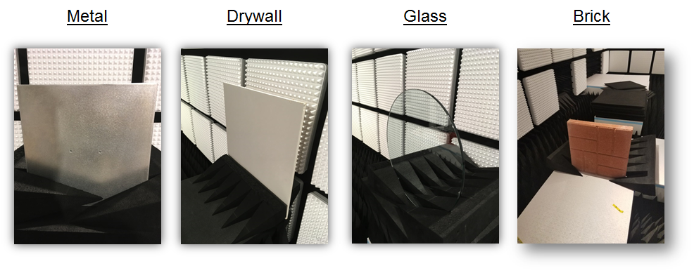 - Each wall was placed at three different angles with respect to the sensor. The corner reflector was kept at a constant distance of 1m behind the wall while the distance between the wall and the sensor, d, was varied between 10cm, 1m, and 3m.

- The measurements were taken in an anechoic chamber to prevent any additional environmental noise from creating false object detections.
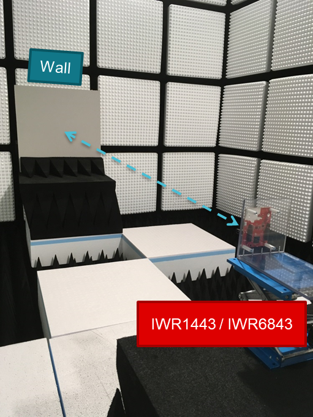
Software Setup
- The experiment was repeated on two different EVMs: IWR1443 and IWR6843. The corresponding mmWave SDK Out-of-Box example was used on both platforms.
- The Windows host PC was running the mmWave Demo Visualizer to show the range and scatter plots. The mmWave Demo Visualizer was configured for Best Range Resolution as shown in the section below.
Method
The steps presented below were repeated for each wall type.
- Create the physical setup as per the details provided above.
- Flash the mmWave SDK Out-of-Box Demo on the mmWave EVM and connect the EVM to the host PC.
- Launch mmWave Demo Visualizer on the host PC and setup the Visualizer as per the configuration shown below:
- Platform - xWR14xx, xWR68xx
- Desired Configuration - Best Range Resolution
- Maximum Unambiguous Range - 9.01m
- Range Detection Threshold - 15 dB
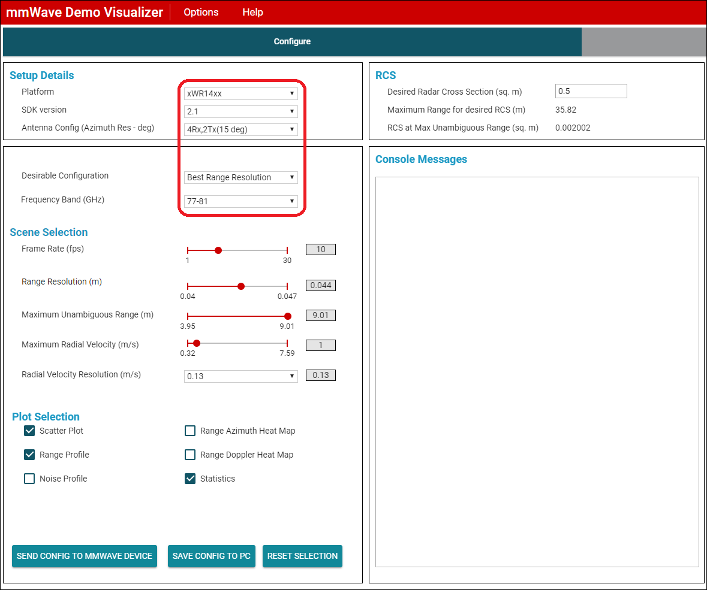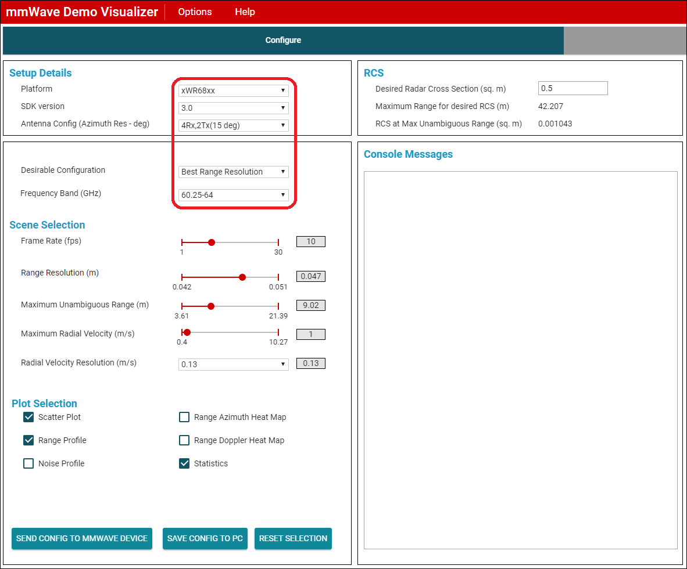
- Press Send config to MMWave Device
- Select the Plots Tab to look at the Range Profile plot
Results
The steps presented above were repeated for each of the wall type and the specified orientations shown above. The range profile plots was used to determine if the wall and the object behind it could be detected.
- If the wall is detected there will be a peak with a green dot at the top of the peak at the approximate distance of the wall from the sensor.
- Similarly, if the object behind the wall is detected, there should be a second peak at the approximate distance of the object from the sensor.
The results are presented in the tables below and are divided into four seperate tables for each wall type.
Case 1 : Drywall
| Distance (m) | |||
|---|---|---|---|
| Angle (°) | 3 | 1 | 0.1 |
| 90 | 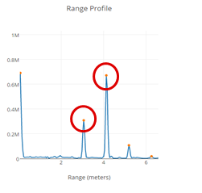 Wall - Detected Object - Detected | 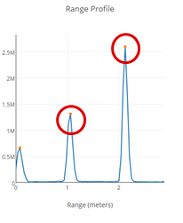 Wall - Detected Object - Detected | 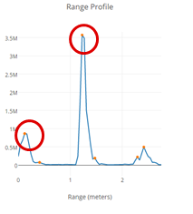 Wall - Detected Object - Detected |
| 45 |
Wall - Not Detected Object - Detected | 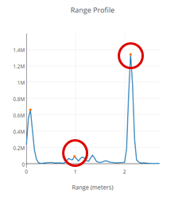 Wall - Detected Object - Detected | 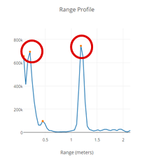 Wall - Detected Object - Detected |
| 15 | 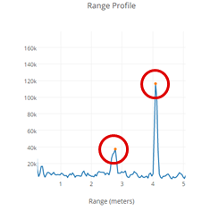 Wall - Detected Object - Detected | 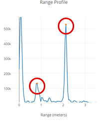 Wall - Detected Object - Detected |
Wall - Detected Object - Detected |


Case 2 : Glass
| Distance (m) | |||
|---|---|---|---|
| Angle (°) | 3 | 1 | 0.1 |
| 90 | 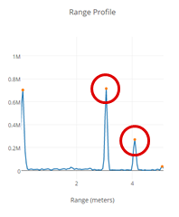 Wall - Detected Object - Detected | 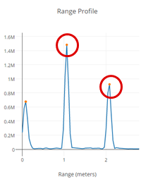 Wall - Detected Object - Detected | 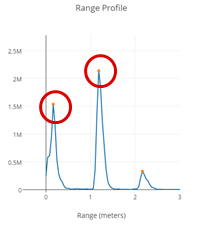 Wall - Detected Object - Detected |
| 45 | 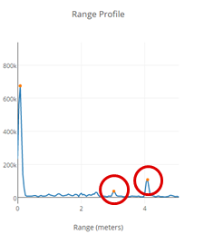 Wall - Detected Object - Detected | 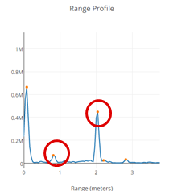 Wall - Detected Object - Detected | 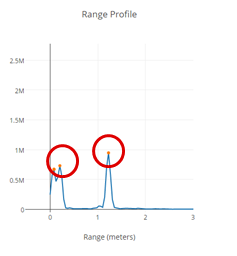 Wall - Detected Object - Detected |
| 15 | 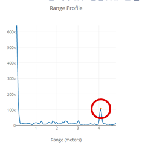 Wall - Not Detected Object - Detected | 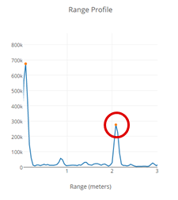 Wall - Not Detected Object - Detected | 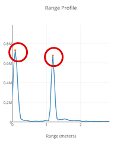 Wall - Detected Object - Detected |
Case 3 : Metal
| Distance (m) | |||
|---|---|---|---|
| Angle (°) | 3 | 1 | 0.1 |
| 90 | 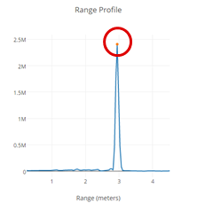 Wall - Detected Object - Not Detected | 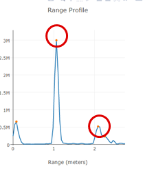 Wall - Detected Object - Detected | 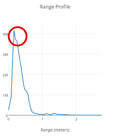 Wall - Detected Object - Not Detected |
| 45 | 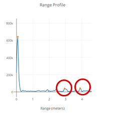 Wall - Detected Object - Detected |
Wall - Detected Object - Not Detected | 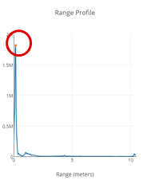 Wall - Detected Object - Not Detected |
| 15 | 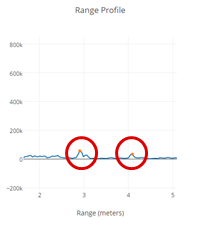 Wall - Detected Object - Detected | 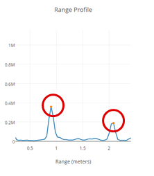 Wall - Detected Object - Detected | 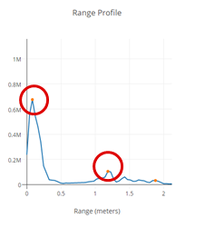 Wall - Detected Object - Not Detected |

Case 4 : Brick
| Distance (m) | |||
|---|---|---|---|
| Angle (°) | 3 | 1 | 0.1 |
| 90 | 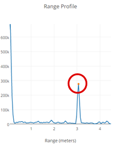 Wall - Detected Object - Not Detected | 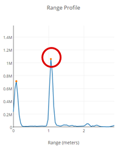 Wall - Detected Object - Not Detected | 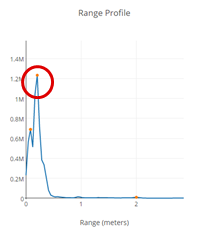 Wall - Detected Object - Not Detected |
| 45 | 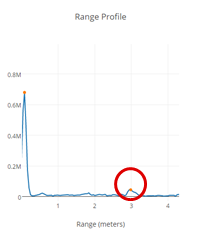 Wall - Detected Object - Not Detected | 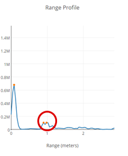 Wall - Detected Object - Not Detected | 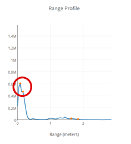 Wall - Detected Object - Not Detected |
| 15 | 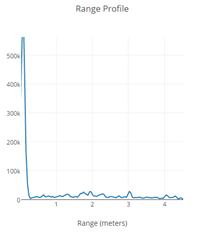 Wall - Not Detected Object - Not Detected | 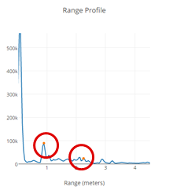 Wall - Detected Object - Detected | 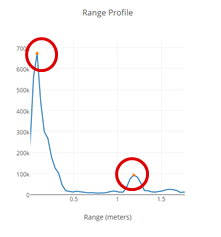 Wall - Detected Object - Detected |
Conclusion
- The mmWave radar sensor was able to detect objects through glass and drywall with relative ease but not through Metal or Brick.
- In some cases, we were able to detect the object behind metal or brick walls but that's likely due to diffraction around the wall.
- The angle of approach has a substantial impact on whether the wall is able to be detected or not.
- As the angle between the wall and the sensor decreases from 90 degrees to 15 degrees, the wall becomes more difficult to detect while the object behind the wall becomes easier to detect.